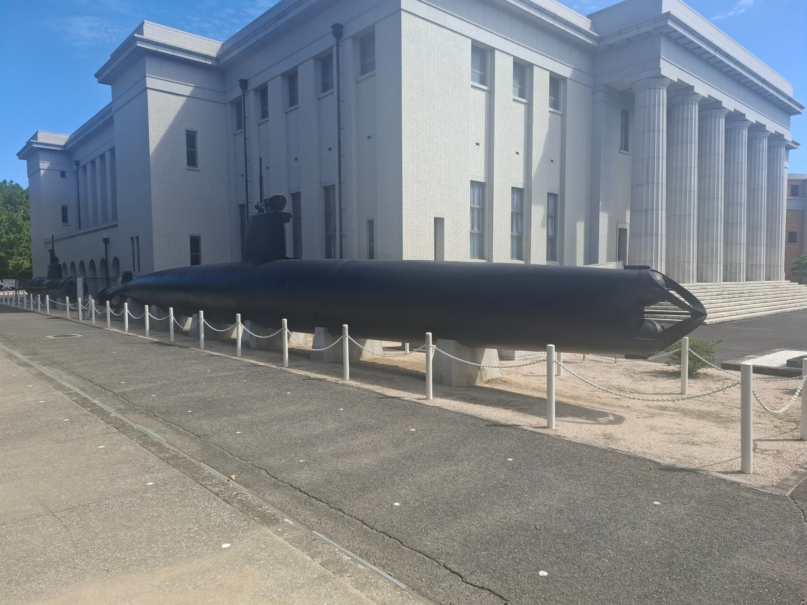
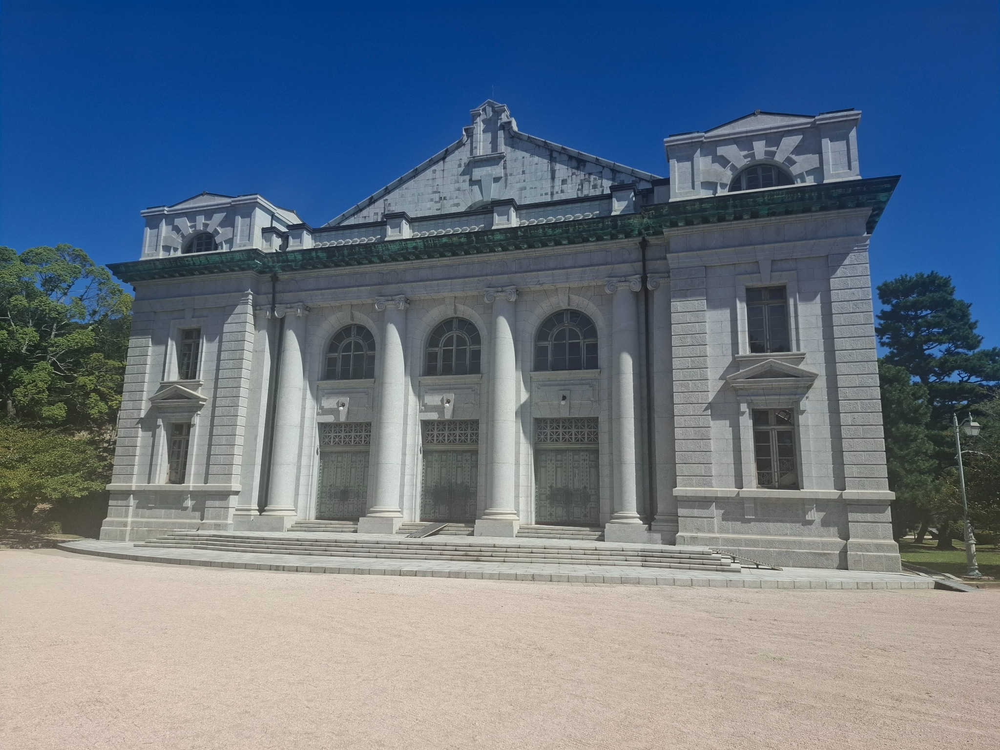
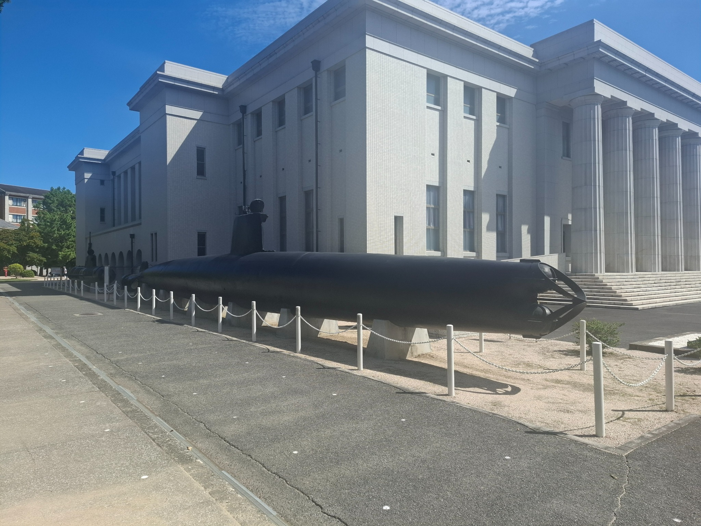
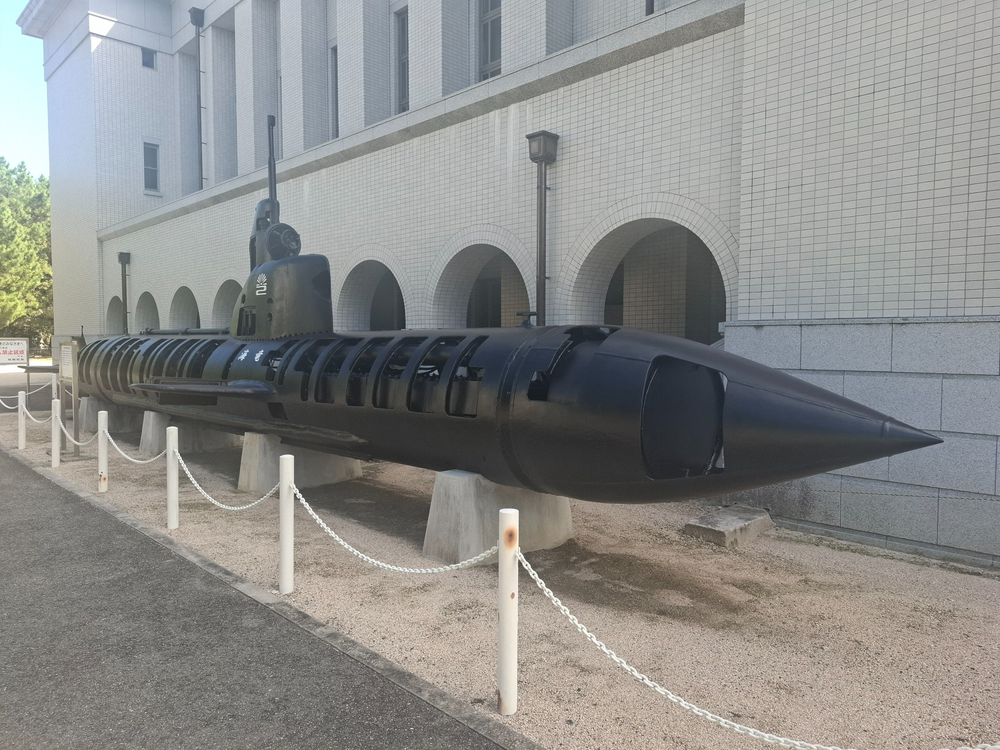
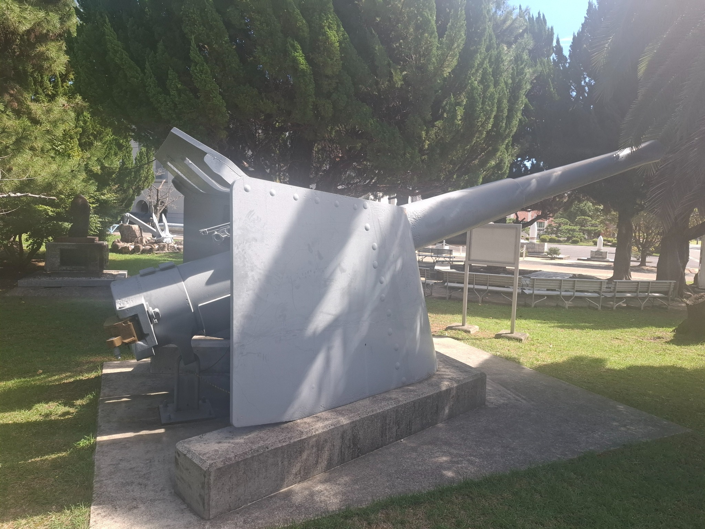
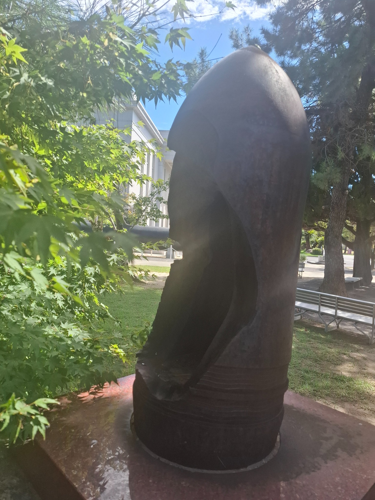
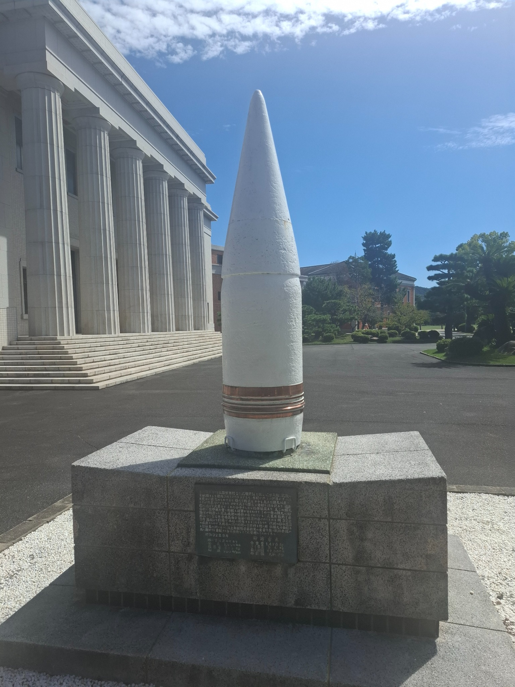
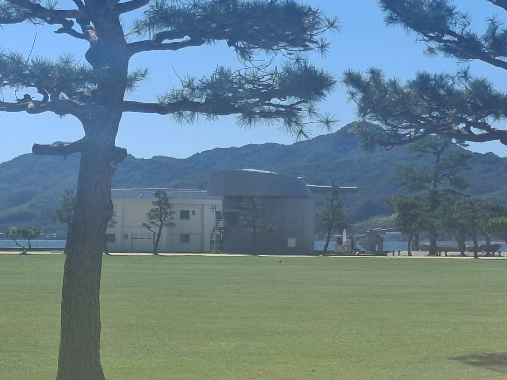

Etajima Naval Academy Museum
| Location | Etajimacho, Etajima, Hiroshima 737-2123, Japan |
|---|---|
| Visited | 31 October 2013, 2 October 2026 |
| Website | JMSDF 1st Service School |

Museum Report
Today’s visit was to Etajima Island, a fairly large island in Hiroshima Bay, and home of the former Imperial Japanese Naval Academy. The Academy site is now part of the JMSDF 1st Service School.
The Japanese Naval Academy was founded in the late 19th Century, and (to my eye at least) appears to have been at least influenced by the architecture of the USNA at Annapolis.

The JMSDF runs public tours through the site, which includes going inside their great hall, as well as visiting the onsite museum. The museum was founded early on in the life of the academy, and a large proportion of their exhibits appear to be pre-war. There are a lot of items here that hold significant importance to the Japanese - for example there is a container (made of wood from the Mikasa) which holds locks of hair from both Admirals Togo and Nelson. The exhibits inside of the museum contain extensive photographic records, documents, and calligraphy covering up to the end of WW2. Unfortunately (1) virtually all of the captions are in Japanese, and (2) no photography at all is permitted inside the museum.
Outside the museum there is a small equipment park where photographs can be taken, which includes one of the Type A midget submarines that took part in the Pearl Harbour attack, and a Kairyu midget submarine, which has had sections of the hull cut out to allow viewing into the interior of the boat.


There is also a 6-inch gun of British Manufacture that was made in 1898, along with an 18-inch shell, a 12-inch shell from Mikasa, the remains of a 14” shell from one of the Kongo class that was recovered from Guadalcanal, and the anchor from Yukikaze (the WW2 Japanese destroyer that somehow managed to survive the war without getting hit by anything).



But the most prized artefact is, unfortunately, not on the tour route. Following the Washington Naval Treaty, Japan took the opportunity to re-arm the battleships Nagato and Mutsu with 16-inch turrets that had been originally built for the now-cancelled battleships Kaga and Tosa (the Kaga/Tosa turrets had thicker armour). One of the original 16-inch turrets from Mutsu (No. 4) was then mounted at Etajima to be used for training - and it is still there. On the tour you get to see it from across a park (about 200m away), however that part of the base is closed to visitors, so you can only take long-distant photographs of it. I had submitted an application to the Commandant to see if I could arrange a closer inspection - however you have to make those applications 30 days in advance (and I had only decided to come to Japan less than a week ago), so no luck. From the distance I could see that there were also other (smaller) guns mounted along the waterfront near the Mutsu turret, but it was not possible to identify them from that distance.

Getting to the JMSDF site is relatively straightforward - you can catch a ferry from either Kure or Hiroshima to Koyo port on Etajima Island, and there are connecting buses that will take you pretty much to the base gate (alternatively there are taxis at the port, or you can walk - it is only about 2.3km). The tour is free, and you don’t need to book - you can just turn up, but the tours only run three times a day, so you need to align your travel plans with the intended tour time. The tour is conducted entirely in Japanese (which is probably appropriate - 24 of the 25 people on my tour this morning were Japanese), but is unfortunate, as you end up standing around for long periods of time listening to very long monologues by the tour guide, which are probably quite interesting, but mean nothing to you if you can’t understand the language. The tour takes well over an hour, of which about 80% of the time was spent waiting for the tour guide to stop talking and move on. Be aware that there are minimum dress standards specified for the tour (e.g. no shorts or short skirts), however they don’t appear to be being enforced particularly rigidly, as one of the attendees on today’s tour was not challenged about his shorts.
There is an on-base shop at the start/finish point of the tour, which sells a fairly extensive range of clothing/merchandise/souvenirs, split fairly evenly between ‘Yamato’-based merchandise, and modern JMSDF merchandise - but no books - not one!
I really am split with my recommendation for this museum - I had been there before (in 2013), and only scheduled it into this trip on the off-chance that my request to see the Mutsu turret might come off. The museum itself clearly has some significant and important items, but if you can’t speak Japanese, and you can’t photograph them, then their value really does drop off. It is going to take up at least half a day of your time, so unless you can speak Japanese, (or share my insane desire to visit every preserved warship in the world), there are probably better things to do if you happen to be in Kure/Hiroshima.